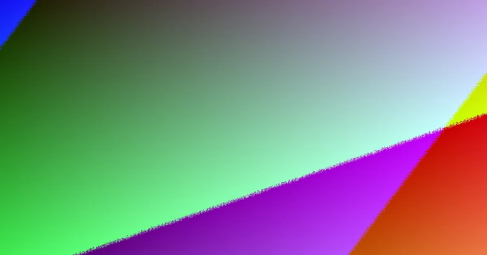

A Noosa fence decision turns on four grounded checks: site exposure, material choice, boundary position and quote inclusions. The parent guide names six job types: Colorbond, timber, pool, aluminium slat, rural fencing and gates. Dividing fence disputes in Queensland allow one month to agree after notice, then a possible QCAT application within two months. Pool barriers and some rural work need separate compliance or licensing checks. Compare written scope, not metre rates alone.
For local buyers, fencing contractors noosa this page works as a practical scoping companion to the parent guide.
Fencing Contractors Noosa Explained
The most useful starting point when briefing fencing contractors: For Coastal And Hinterland Blocks is the fence line itself, not a catalogue of materials. A beachfront block raises different wind, salt air and post specification questions from a hinterland run. Locality matters because it explains the job: Noosa Heads and Sunshine Beach illustrate coastal exposure, while Doonan, Eumundi and Kin Kin illustrate hinterland streets and acreage boundaries. Marcoola sits in the mix as another coastal example.
A good first enquiry describes the fence line, the suburb, the old fence if one is being removed, access limits and the job purpose. Privacy, airflow, street presentation, pool safety and rural containment each point to different materials, heights and hardware. A quote that ignores those inputs may look tidy, but it gives less basis for comparing two offers.
- Identify corners, returns, gates and hard to reach sections before comparing length rates.
- Flag slopes, retaining walls, pools or acreage boundaries early because they can change the compliance question.
- Ask whether removal and disposal of the existing fence are included.
matching material to the job the fence must do
The parent guide groups the main options into six types: Colorbond, timber, pool fencing, aluminium slat, rural fencing and gates. Each solves a different problem. Steel panel fencing is presented as a boundary option for coastal wind exposure. Timber is positioned for residential and hinterland settings. Aluminium slat is described as a front fence and privacy screen choice suited to coastal architecture.
Pool fencing should be treated differently from a normal boundary fence. The guide describes pool barriers as compliance led work built to the Queensland pool safety standard, with the inspection pathway confirmed by a licensed pool safety inspector. Rural fencing is separated out because acreage boundaries around places such as Doonan, Eumundi and Kin Kin can raise different QBCC scope questions.
Rather than asking for the cheapest material, ask what the fence must do on that specific line, then ask what assumptions sit behind post spacing, footing, gate hardware and finishes.
shared boundaries and the neighbour process
A shared boundary is both a building decision and a neighbour process. The parent guide cites Queensland's Neighbourhood Disputes (Dividing Fences and Trees) Act 2011 and explains that adjoining owners considering a sufficient dividing fence have a formal path to follow. A preferred premium material, extra height or finish is not automatically a shared cost if it goes beyond what is sufficient.
Before committing to the look of the fence, write down the proposed position, material, height and scope. The guide recommends at least one quote and a written description of the work. If agreement is not reached, a notice to contribute is the formal step, with one month allowed to reach agreement and a possible QCAT application within two months of the notice.
- Check the boundary before finalising the panel choice.
- Ask how any retaining wall affects the combined height.
- On a corner block, ask whether sight lines change the front or side treatment.
reading a quote beyond the metre rate
A metre rate is only a planning tool. The dependable proof is in the process: a clear scope, a sensible site measure, visible assumptions and written terms before work is booked. Two quotes can cover the same length yet include different allowances for access, removal, footing conditions and gates.
The guide's project range calculator is a conversation starter only. It is not a site measure or a fixed offer. When the written quote arrives, compare what it says about old posts, disposal, making good, returns, corners, gate automation if relevant, and any exclusions.
Licensing also belongs in the conversation. The guide tells readers to check that a contractor holds a current QBCC licence with the right scope for work that requires licensing. Anyone comparing fencing contractors quotes should treat that licence check as a standard step, not an extra.
who this applies to
This angle mainly suits Noosa and Sunshine Coast property owners moving from rough ideas to a written scope. It applies to owners replacing an old dividing fence, planning a pool barrier, choosing a front privacy screen, or working out a rural boundary on acreage.
It is less useful where the project already has a final surveyed boundary, approved drawings and a signed specification. In that case the next task is contract comparison rather than early planning. For everyone else, the best short brief is a description of the fence line, the purpose of the fence, the site exposure, the old fence condition and any neighbour, pool, slope or acreage factor.
- Describe the line. Write down the suburb, approximate run, access issues, old fence condition and whether a pool, slope or neighbour is involved.
- Choose by function. Pick the material for what the fence must do on that line, whether privacy, pool safety, street presentation or containment.
- Handle the boundary. For a shared fence, agree position, material, height and scope in writing before work is booked, and follow the notice path if agreement fails.
- Compare written quotes. Check scope, assumptions, exclusions, removal and disposal, and confirm a current QBCC licence where the work requires one.
| Job type | Best suited to | Planning notes |
|---|---|---|
| Colorbond steel panels | Boundary fencing in coastal wind exposure | Ask about post specification for salt air |
| Timber | Residential and hinterland settings | Confirm finishes and maintenance assumptions |
| Aluminium slat | Front fences and privacy screens | Suits coastal architecture |
| Pool fencing | Compliance led pool barriers | Queensland pool safety standard and inspector pathway |
| Rural fencing | Acreage boundaries such as Doonan, Eumundi, Kin Kin | Can raise QBCC scope questions |
| Gates | Access points across all of the above | Check hardware, automation and sight lines |
Common questions
Is a metre rate enough to compare two fence quotes? No. The guide treats a metre rate as a planning tool only. Two quotes can use the same length but differ on access, removal, footing conditions and gates. Compare the written scope, assumptions and exclusions instead.
What happens if my neighbour and I cannot agree on a dividing fence? Under the process described in the guide, a notice to contribute is the formal step. Adjoining owners have one month to reach agreement, and if they do not, a QCAT application is possible within two months of the notice.
Do pool fences and rural fences need extra checks? Yes. Pool barriers are compliance led work built to the Queensland pool safety standard, with inspection confirmed by a licensed pool safety inspector. Rural fencing on acreage boundaries can raise different QBCC scope questions.
An independent planning guide for Noosa and Sunshine Coast property owners scoping a fence, grounded solely in the parent guide's published material.